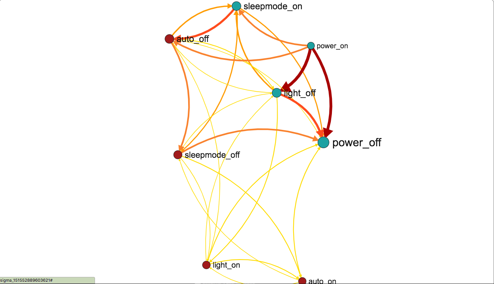

3M智能空气净化器
2017个人年度报告
Science. Applied to Life.
2017年4月22日
Kangaroo从上海来到了北京
您累计使用空气进化器125天，开机时间757小时
4月最少为7天，12月最多为25天
击败了62.7%的同城用户
但仍有
12天
PM2.5较高时未使用空气净化器
建议开启并关注3M净化专家APP的PM2.5提醒功能
您更喜欢在夜晚使用空气净化器
但并不是每次都开启睡眠模式
可以尝试设置定时睡眠或关机功能
让您的睡眠更健康舒适
平均净化效率44%左右
请您注意在使用时关闭门窗
并关注空气净化器有效空间大小
提升净化效率
已净化灰尘超过10克
滤网剩余寿命95%
可以在12个月后更换滤网
您最常用的操作是：

开机后关闭夜灯
推荐您使用APP设置夜灯开关默认值
同时我们推荐
新品儿童口罩
，为您的孩子提供全流程的完善保护
希望在新的一年里，3M空气净化器也能给您和家人提供更好的呼吸环境